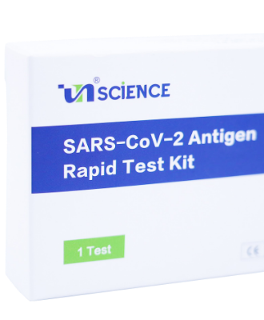
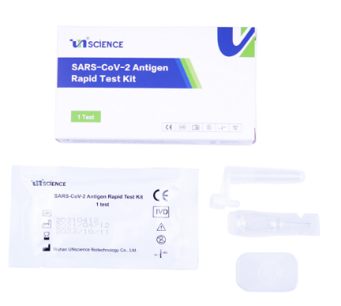
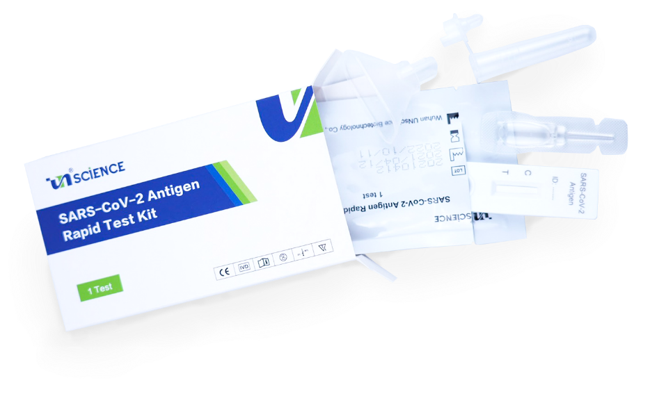

About
KOGEN PASSとは
これが新しい感染対策
検査キットの簡単検査 × ブロックチェーンでデジタル証明
Test
検査について
コロナウイルス抗原検査キット

検査方法
唾液
結果判定時間
15分
高い正診率
97.37%
変異株対応
イギリス型・南アフリカ型・
ブ ラジル型・インド型(デルタ株)
ブ ラジル型・インド型(デルタ株)
※
抗原検査キットで新型コロナウイルスに感染しているという確定はできません。あくまで陽性の疑いがあるという事なので、医療機関や保健所にご相談する事を推奨いたします。
※
本製品医薬部外品です。医療機器および体外診断用医薬品でない為、治療や診断に使えません。
こんな時に検査キットが使える
急な発熱や体調が 優れない時

- 急な発熱があり検査したい
- 倦怠感があり体調が優れない
- 味覚や嗅覚に違和感がある
- 咳や鼻水、風邪の症状がある
出張や帰省など人に会う時
- 友人や取引先、ご年配の方に会う前に、無症状でも検査したい
- 実家に帰省する時に検査してから家族と会いたい
- 仕事で他県に出張など、移動する時に事前検査したい
イベントや冠婚葬祭 催事の時
- 結婚式や葬儀などで人が密集するイベントの事前検査
- イベントなどで、不特定多数の人と関わる時
- 参観日・修学旅行など、幼稚園・学校の行事の事前検査
CASE 01

好きなコンサートやイベントに参加しても良いのかな？

検査キットでまずは自分が感染していないかの確認が可能です。
多くの参加者が検査をする事で安心してイベントを楽しむことができます。
CASE 02
友人や家族に会いに行きたい！
だけど感染していて周りに移すのが怖い
会いたい人に笑顔で会う為に検査キットは安心をご提供できます。
大事な人にウイルスを移さない為にもまずは感染しているかの確認が大切です。
こんな時に検査キットが使える
| 検査種類 | PCR検査 | 抗原検査 | 抗体検査 |
|---|---|---|---|
| 目的 | ウィルスを検知 現在感染しているかを判定 |
ウィルスを検知 現在感染しているかを判定 |
感染による血液中の抗体を検知。過去の感染の有無（抗体の有無）を判定 |
| 調べるもの | ウイルス遺伝子の有無を調べる | ウイルス特有のタンパク質を調べる | ウイルス特有のたんぱく質（IgM/IgG）を調べる |
| 検査する検体 | 鼻や喉の粘液から採取 | 鼻や喉の粘液から採取 | 血液から採取 |
| 精度 | 70~80% | PCR検査の8割（簡易キットの場合） | 84~95%（簡易キットの場合） |
| お手軽度 | 検査機関や返送や回収の予約が必要 | その場で約15分 | その場で約15分 |
Flow
検査の流れ


Product
商品情報

商品名
コロナウイルス抗原検査キット（UNscience社）
SARS-CoV-2 Antigen Rapid Test Kit
SARS-CoV-2 Antigen Rapid Test Kit
使用目的
唾液に含まれる新型コロナウイルス（SARS-CoV-2）の有無を判定する。
測定時間
15分
製造元
UNscience社（中国）
内容量
1箱（1テスト）に入っている内容は以下になります。
・検査キット本体 1個
・唾液コレクター 1個
・チューブキャップ 1個
・処理液 1個
・内容説明書 1枚
・使用方法説明書 1枚
・KOGEN PASS アプリ説明書 1枚
・検査キット本体 1個
・唾液コレクター 1個
・チューブキャップ 1個
・処理液 1個
・内容説明書 1枚
・使用方法説明書 1枚
・KOGEN PASS アプリ説明書 1枚
価格
通常購入 ¥2,200円（送料・税込）
定期購入 ¥1,980円（送料・税込）
定期購入 ¥1,980円（送料・税込）
FAQ
よくあるご質問
抗原検査キットについて
Q.
検査キットはどれくらいで届きますか？
A.
15時までのご注文で即日発送となります。（日曜・祝日を除く）
※天候や交通状況、繁忙期等、配送業者の状況等により配達が遅れる場合がございます。
Q.
使用期限はありますか？
A.
検査キットの使用期限は、製造日より18ヶ月となっております。
キット収納箱の側面に使用期限が記載されております。砂時計マークの横に記載されているのが
使用期限です。
※ご使用されるまでは、直射日光や高温多湿を避け、30℃以下〜2℃以上で保管してください。
Q.
抗原検査に年齢制限はありますか？
A.
年齢制限はございません。
Q.
妊娠中・授乳中・乳幼児も検査を受けられますか？
A.
検査可能です。
Q.
使用前の注意事項はありますか？
A.
検査時の唾液採取の前は、少なくとも30分以内は飲食や歯磨き、うがい、喫煙等は控えてくださ
い。正しい結果が出ない可能性があります。
Q.
キットを他の人に渡しても問題ありませんか？
A.
転売や、譲渡は固くお断りしています。ご家族の分や従業員様の分をまとめて購入することは問
題ありません。
Q.
キットを廃棄する時はどうしたらいいですか？
A.
使用済の各検査キットは、ポリ袋に入れてご自身で可燃ごみとして処分していただけます。
※ゴミの分別方法や出し方の詳細はお住まいの各自治体へご確認ください
Q.
料金の支払い方法は何がありますか？
A.
クレジットカード決済をご用意しております。
Q.
申込完了後、キャンセルや返金はできますか？
A.
衛生用品のため開封・未開封に関わらず、お客様の事情に帰する返品・交換については受け付けておりません。何卒ご理解賜りますよう宜しくお願い申し上げます。
Q.
表示価格以外にかかる料金はありますか？
A.
ございません。送料等全て込の金額です。
Q.
健康保険は適用されますか？
A.
恐れ入りますが、出来かねます。
Q.
検査で陽性反応が出た場合はどうしますか？
A.
陽性反応が出た場合は医療機関を受診してください。
※医療機関を受診する際は、必ず事前に医療機関に連絡し抗原検査キットで陽性反応がでたことを伝え、医療機関の指示に従って受診してください。
KOGEN PASSについて
Q.
KOGEN PASSとはなんですか?
A.
KOGEN PASSとは抗原検査の結果をデジタル証明書として使用できるWebアプリケーションです。詳しくはこちらからサイトをご確認ください。
Q.
デジタル証明書はどのように発行しますか?
A.
(１)「KOGEN PASS」 Webアプリのアカウント作成
(２)自身の情報を登録
(３)検査結果が出たキットを撮影、申請、完了
(４)二次元コード（QR）、PDFのダウンロードが可能になります。
詳しくは検査キット購入時に同封された説明書をご確認ください。
Q.
デジタル証明書はどのように発行しますか?
A.
「KOGEN PASS」Webアプリで発行された二次元コード（QR）を提示し、相手側がカメラ付き端末で読み取ることで、検査結果、
日時などの情報が相手側に表示されます。また、検査結果、日時などの情報が記載されたPDFをダウンロード、印刷することも可能です。
※二次元コード（QR)の読み取りを行うには「KOGEN PASS」Webアプリのアカウントが必要です。
Q.
デジタル証明書は他の検査キットでも発行できますか??
A.
他社の検査キットではデジタル証明書は発行できません。KOGEN PASSは弊社の抗原検査キット専用となっております。
Q.
KOGEN PASSはアプリをダウンロードする必要がありますか？??
A.
KOGEN PASSはWebアプリなのでアプリのダウンロードは必要ありません。そのため、カメラ付き端末であればタブレット等でも使用できます。
Q.
デジタル証明書発行には料金がかかりますか？
A.
無料で発行・ご使用いただけます。※インターネット通信料はお客様負担となります。
Q.
デジタル証明書が利用できる施設等はありますか？
A.
現在はありませんが、試験導入を行っている施設等はあるので、今後使用可能になり次第ホームページ等でお知らせいたします。
Q.
デジタル証明書は海外渡航などで使用できますか？
A.
使用できません。抗原検査キットでの結果はあくまでも自身での確認ようであり、感染の有無を保証するものではありません。デジタル証明書も同様です。